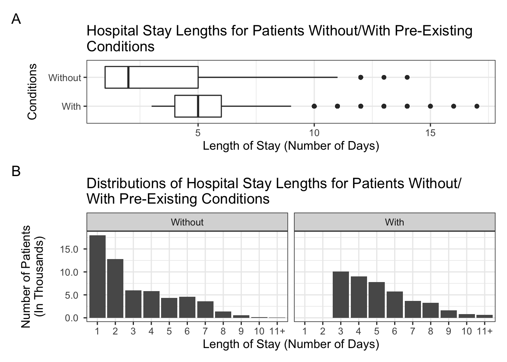
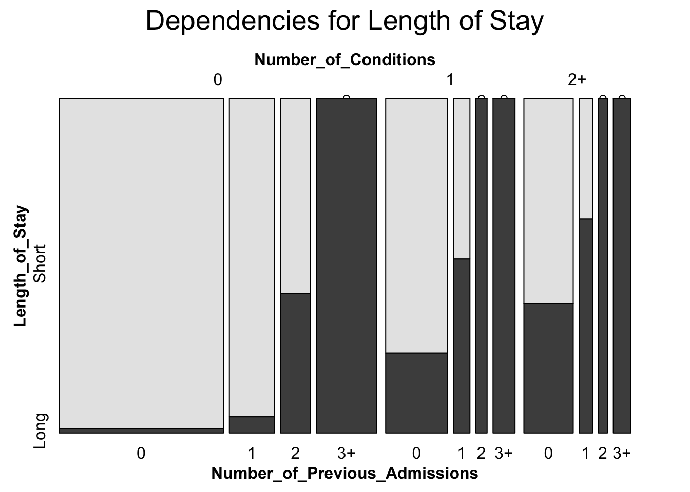
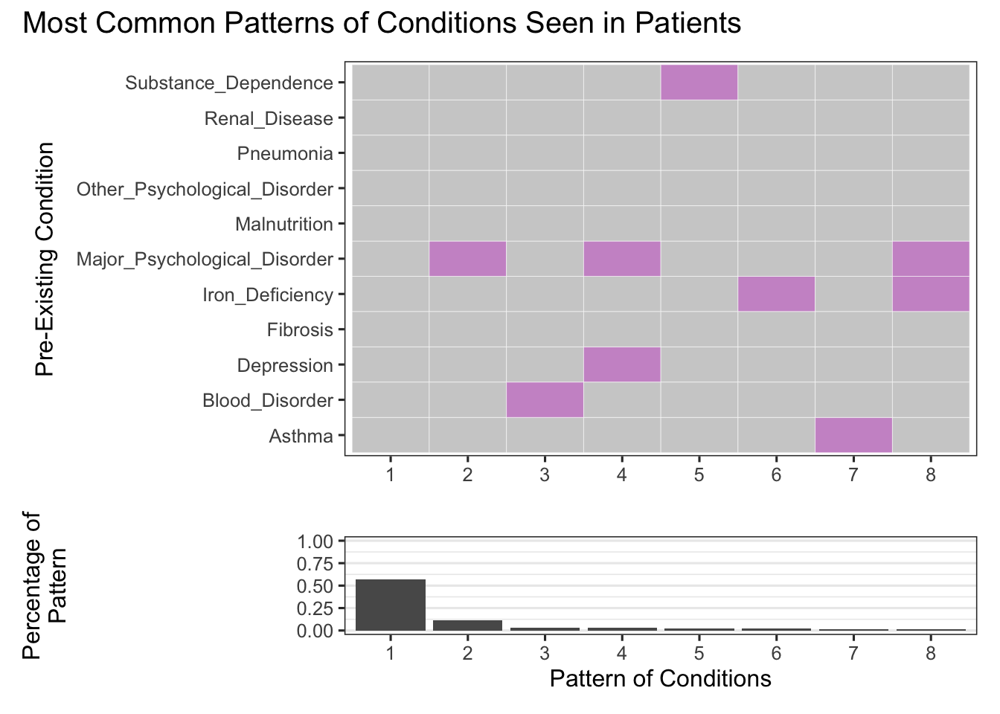

Chapter 5 Results
5.1 Distribution of Patients by Length of Stay in Hospital
This histogram shows the distribution of our data: how the number of patients are spread according to the lengths of their hospital stays. It is clear to see that our data is fairly unimodal; patients who stayed only one day in the hospital are the most abundant, and the number of patients generally decreases as the length of stay in the hospital becomes longer. Interestingly, however, there were less patients who stayed for only two days as compared to those who stayed for three or four days, which was out of trend with the rest of the data. As a side note, the full range of the lengths of stays was from 1 - 13 days; however, since there were very few patients who stayed for 11 or more days, we decided to group these patients into one category: 11+ days. This did not skew the data or change its interpretation in any way since the data grouped in this category were so few and did not present any unusual behavior.
5.2 Correlations between Physiological Data and the Length of Stay
Moving on, we analyzed the medical and physiological data provided in the dataset to see whether and how these variables affected the hospital stay lengths. We first looked at the physiological data.
In order to examine which physiological measurements had the strongest correlations with the length of a patient’s stay in the hospital, we first looked at scatterplots. For each plot, the average physiological measurement for all patients who stayed for a certain number of days was calculated and plotted against the corresponding length of stay. Although nine different plots were created for all nine physiological categories provided in the dataset, only three plots are presented above for hematocrit levels, blood urea nitrogen levels, and respiration levels. These were the physiological categories whose correlation to a patient’s length of stay were the most prominent; the other six plots presented no clear correlation with the length of stay.
From the first plot, it is clear to see that, as hematocrit levels decrease, a patient’s length of stay generally decreases. The trend becomes especially strong for patients who stay eight days or longer. From the second plot, it can be observed that patients who have higher blood urea nitrogen levels generally tend to have longer hospital stays, this trend again becoming more pronounced in patients who stay eight or more days. The third plot also shows that patients with lower respiration values stay for longer at the hospital, this again being more clear for patients with longer stays. This data seem to suggest that these physiological data is a more important predictor for patients with more extreme levels (i.e. a hematocrit value of 11.6 g/dL or lower), who will more likely have stays of more extreme lengths.
These observations are confirmed by the correlation matrix below, which shows the correlation p-values between every pair of physiological category and between every physiological category and the length of stay. Simply put, the higher the absolute value of the p-value, the stronger the correlation. A positive p-value (accompanied by a red shade) indicates a positive correlation, while a negative p-value (accompanied by a purple shade) indicates a negative correlation.
From the above correlation matrix, it is clear to see that the length of a patient’s stay is most strongly correlated to their blood urea nitrogen value, then their hematocrit value, and finally their respiration measurement. Moreover this correlation matrix shows us connections in-between the physiological categories: indeed, there is a clear correlation between the average blood urea nitrogen value and the the average respiration, and also between the average blood urea nitrogen value and the average hematocrit value.
This latter correlation motivated us to deepen our analysis and we moved on to attempt to detect more patterns between the blood urea nitrogen value, average hematocrit value and a patient’s length of stay in this hospital.
Although the above plot initially seems unclear, this scatterplot shows some interesting patterns from which we can deduce two main conclusions.
For one, the localization of the points shows that patients with high measurements of blood urea nitrogen levels generally also have low measurements of henatocrit values. This can be seen from the fact that patients who have more extreme values of blood urea nitrogen levels (i.e. above 100 mg/dL) usually have lower levels of hematocrit (i.e. below 15 g/dL, as compare to a high of almost 25 g/dL). The plot shows that patients who have both a high hematocrit level and blood urea nitrogen level were not seen, as the upper right-hand corner of the plot is blank.
The second conclusion that can be drawn is that the length of a patient’s stay in the hospital generally increases with high blood urea nitrogen values and low hematocrit values. This can be observed from the fact that the intensity of the purple color of the dots generally increases from the top left to the bottom right of the plot (a more intense shade of purple indicates a longer length of stay in the hospital).
Finally, these heatmaps confirm our previous analysis: when the length of a patient’s stay in the hospital increases, the bins of the heatmap spread toward the bottom right of the plot. You can see this in the above figure where the bottom-right corners of plots showing data of patients with relatively short hospital stays (LoS = 1, 2, 3) are fairly empty, as compared to those of plots presenting data of patients with longer hospital stays (LoS = 7, 8, 9). This means that patients with low hematocrit measurement values and high blood urea nitrogen levels generally have a higher probability to stay for longer periods in the hospitals than other patients.
However, the distribution of the patients for each length of stay did not vary by much. In all 9 plots shown above, most of the patients were heavily localized around a hematocrit level of ~12 g/dL and a blood urea nitrogen level of ~10 mg/dL. Patients whose measurements fell outside of this small window were few, as indicated by the dark shade of the peripheral bins. When new bins appeared in the bottom-right corners of plots, they were the same dark shade. Therefore, this suggests that even patients with typical hematocrit and blood urea nitrogen levels could have extreme stay lengths, and that this analysis generally applies to patients with extreme hematocrit and blood urea nitrogen levels.
(As a side note, the plots of data regarding patients who stayed 10 or 11+ days were omitted as the trend shown in those plots were the same, and including those only detracted from the visibility of the graph depicted above.)
This concludes the analysis of correlations between physiological data and hospital stay lengths. We shall now move onto analyzing how the medical condition (categorical) data relates to a patient’s hospital stay length.
5.3 Analysis of Categorical Data: Pre-Existing Conditions & Number of Previous Admissions
We will first begin this section by splitting up the patients into two categories: those that did not have any pre-existing medical conditions upon visiting the hospital (“Without”) and those that did (“With”).

The boxplot in plot A clearly shows that the length of stay for a patient is generally higher if the patient has some pre-existing conditions in comparison to if they do not have any. In fact, the median stay length for patients without any conditions (2 days) is much shorter than the the median stay length for patients with conditions (5 days). Notably, as seen in the bar chart of plot B, there are no patients who had pre-existing conditions that also stayed at the hospital for less than 3 days.
The distributions of hospital stay lengths for patients both without and with pre-existing conditions are uni-modal and right-skewed; they both peak at the shortest length of stay. However, the interquartile range for patients without conditions is much larger (about twice the size) than that for patients with conditions, indicating that although most patients without conditions had a short hospital stay, there also were a noteworthy number of these patients who had longer stays than their condition history would suggest. However, of patients who had the longest hospital stays (9, 10, 11+ days), more had pre-existing conditions, as seen in plot B.
Then, we moved onto analyzing whether the specific number of pre-existing medical conditions that a patient had was a good predictor of the their length of hospital stay.

As seen in the bar chart of plot A, most of the patients admitted did not have any pre-existing medical conditions. A substantial amount of admitted patients had 1 or 2 conditions, but few had more than 3.
The cleveland dot plot in plot B shows that, as the length of stay in hospital increases, the number of conditions that the patient has generally increases. More specifically, as the length of stay in the hospital increases, the proportion of patients with few pre-existing conditions decreases while the proportion of patients with more pre-existing conditions increases.
Patients who stayed only 1-2 days in the hospital all had 0 conditions. However, as the length of stay increases, it is clear to see that the number of patients who have no conditions decreases. This is also the case for patients who have 1 or 2 conditions, and for patients who have 3 conditions - though to a lesser extent. However, patients with no/few conditions are the most abundant, and even as the length of stay increases, there are more patients with few conditions than many conditions. Patients who have 4 or more conditions stayed for a minimum of 4 days, though there are very few of them and the number of such patients for each length of stay is generally constant. Overall, this shows that the more pre-existing conditions a patient has, the more likely it is for them to stay longer in the hospital.
Subsequently, the relationship between the number of previous hospital admissions and the length of a patient’s stay was analyzed.
The bar graph in plot A shows that the majority of admitted patients had not been previously admitted to the hospital. The rest of the patients had previously been admitted to the hospital 1, 2, 3, 4 times at similar frequencies.
The cleveland dot plot in plot B shows that, as the number of previous admissions increases, the length of stay in the hospital also generally increases. More specifically, as the length of stay increases, the proportion of patients with higher numbers of previous admissions also increases.
The number of patients who either had 0 or 1 previous admissions to the hospital generally decreases as the length of stay increases. In fact the patients who had the shortest stays (1-3 days) had at most only 1 previous admission. Up until stays of 4 days, it can be seen that patients who had the fewest (i.e. 0) previous admissions were generally the most abundant. However, interestingly, this trend reverses for stays of 6 days or longer. For stays of 6 or more days, it seems that patients who have a high number of previous admissions are the more abundant, whereas patients with few previous admissions are rarer. In fact, of the patients that had the longest stays (9, 10, 11+ days), all had been admitted to the hospital at least twice, with patients who had 5 or more previous admissions being the most common.
We then analyzed the dependency between all 3 categorical variables: number of pre-existing medical conditions, number of previous admissions, and the length of stay.

The above mosaic plot shows that there is a positive relationship between the number of pre-existing medical conditions, the number of previous admissions, and the length of a patient’s stay in the hospital.
(Note: For clarity in the mosaic plot, the number of categories for each variable has been decreased. “Short” stays in the hospital refer to those that are 4 days (the median length of stay) or less, and “long” stays in the hospital refer to those that are 5 days or more.)
For patients who had 0 previous admissions, the proportion of patients who had “long” stays increased as the number of conditions increased. This trend is also seen for patients with 1 or 2 previous admissions to the hospital. Patients who had 3 or more previous admissions, however, all had “long” hospital stays regardless of the number of conditions, suggesting that for these patients, the number of conditions is irrelevant or at least not as important.
5.4 Most Common Patterns of Pre-Existing Medical Conditions
We were also curious about what the most common patterns of medical conditions were, and how these may affect the length of a patient’s stay in the hospital.

The above plot is a plot visualizing the top 8 most common patterns of conditions admitted patients have. In the top-most tile plot, each column represents a pattern of condition that a certain number of admitted patients presented, and each row represents a single medical condition. A grey tile means that this pattern does not include this condition, whereas a pink tile means that the pattern does. For example, pattern 1 (column 1) is the pattern where the patient did not have any of the conditions. Pattern 2 (column 2) is the pattern where the patient only had psychological disorder major, but not any of the other conditions. The columns are ordered from 1 to 8 by frequency in the data set, which can be seen in the bar graph below, showing the percentage frequency of each pattern.
The majority of admitted patients did not have any of the conditions (pattern 1), and the next seven most common patterns were comparatively much rarer. Most of the top patterns had only one of the given conditions, although patterns 4 and 8 had two conditions each. In these patterns, the most common condition was psychological disorder major (seen in 3 patterns) and iron deficiency (seen in 2 patterns). Some conditions were not seen at all in the top patterns, such as pneumonia or malnutrition.
Taking these top most common patterns, we then analyzed the lengths of hospital stays for their corresponding patients.
The above boxplot shows that the patients who exhibited the most common pattern (no conditions) generally had a shorter stay in the hospital than patients exhibiting any other pattern. In fact, the median length of stay for patients with condition pattern 1 (2 days) was shorter than the minimum length of stay for patients of any other condition pattern.
Interestingly, 5 of the next 7 most common condition patterns had the same median length of stay (5 days), while the other 2 patterns also had the same median length (4 days). The minimums and 75th quartiles of all the next top 7 patterns were also all the same. As the distributions of patient lengths of stays are so similar for the top 2nd to 7th most common patterns of medical conditions, it can be reasonably deduced that the specific pattern is not as important in determining length of hospital stay as is its frequency.